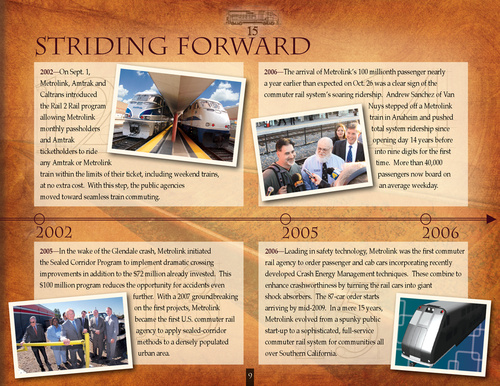

|

Striding Forward
2002—On Sept. 1, Metrolink, Amtrak and Caltrans introduced the Rail 2 Rail program allowing Metrolink monthly passholders and Amtrak ticketholders to ride any Amtrak or Metrolink train within the limits of their ticket, including weekend trains, at no extra cost. With this step, the public agencies moved toward seamless train commuting. 2006—The arrival of Metrolink’s 100 millionth passenger nearly a year earlier than expected on Oct. 26 was a clear sign of the commuter rail system’s soaring ridership. Andrew Sanchez of Van Nuys stepped off a Metrolink train in Anaheim and pushed total system ridership since opening day 14 years before into nine digits for the first time. More than 40,000 passengers now board on an average weekday.
2002
2005—In the wake of the Glendale crash, Metrolink initiated the Sealed Corridor Program to implement dramatic crossing improvements in addition to the $72 million already invested. This $100 million program reduces the opportunity for accidents even further. With a 2007 groundbreaking on the first projects, Metrolink became the first U.S. commuter rail agency to apply sealed-corridor methods to a densely populated urban area. 9
2005
2006
2006—Leading in safety technology, Metrolink was the first commuter rail agency to order passenger and cab cars incorporating recently developed Crash Energy Management techniques. These combine to enhance crashworthiness by turning the rail cars into giant shock absorbers. The 87-car order starts arriving by mid-2009. In a mere 15 years, Metrolink evolved from a spunky public start-up to a sophisticated, full-service commuter rail system for communities all over Southern California.
|